항공산업기사 (2013-09-28 기출문제)
1과목: 항공역학
1. 레이놀즈 수(Reynolds Number)에 대한 설명으로 옳은 것은?
- 관성력과 중력의 비이다.
- 관성력과 점성력의 비이다.
- 관성력과 유체 탄성의 비이다.
- 유체의 동압과 정압의 비이다.
(정답률: 88%)

2. 유체 흐름과 관련된 용어의 설명으로 옳은 것은?
- 박리 : 층류에서 난류로 변하는 현상
- 층류 : 유체가 진동을 하면서 흐르는 흐름
- 난류 : 유체 유동특성이 시간에 대해 일정한 정상류
- 경계층 : 벽면에 가깝고 점성이 작용하는 유체의 층
(정답률: 88%)
3. 정상선회비행 상태의 항공기에 작용하는 힘의 관계로 옳은 것은?
- 원심력 ＞구심력
- 중력 ≤ 원심력
- 원심력 = 구심력
- 원심력＜ 구심력
(정답률: 84%)
4. 날개면적이 96m2이고 날개 길이가 32m 일 때 가로세로비는 약 얼마인가?
- 2.1
- 3.0
- 9.0
- 10.7
(정답률: 69%)
5. 비행기가 트림(trim)상태의 비행은 비행기 무게 중심 주위의 모멘트가 어떤 상태인가?
- “부(-)”인 경우
- “정(+)”인 경우
- “영(0)”인 경우
- “정”과 “0”인 경우
(정답률: 84%)
6. 물체에 작용하는 공기력에 대한 설명으로 옳은 것은?
- 공기력은 공기의 밀도와 속도의 제곱에 비례하고 면적에 반비례한다.
- 공기력은 공기의 밀도와 속도의 제곱에 반비례하고 면적에 반비례한다,
- 공기력은 속도의 제곱에 비례하고 공기밀도와 면적에 비례한다.
- 공기력은 공기의 밀도와 속도의 제곱에 반비례하고 면적에 비례한다.
(정답률: 73%)
7. 날개하중이 30kgf/m2이고, 무게가 1000kgf 인 비행기가 7000m 상공에서 급강하 하고 있을 때 항력계수가 0.1이라면 급강하 속도는 몇 m/s인가? (단, 밀도는 0.06kgf·s2/m4이다.)
- 100
- 100√3
- 200
- 100√5
(정답률: 58%)
8. 항공기의 비항속거리(Speciific range)와 비항속시간(Specific endurance)을 옳게 나타낸 것은? (단, dt 비행시간, ds : dt 동안 비행거리, dQ : 비행 중 dt 동안 소비한 연료량이다.)
- 비항속거리 :
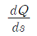
, 비항속시간 :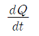
- 비항속거리 :
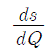
, 비항속시간 :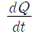
- 비항속거리 :
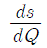
, 비항속시간 :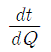
- 비항속거리 :
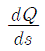
, 비항속시간 :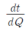
(정답률: 65%)
9. 비행기에 작용하는 모든 힘의 합이 영(0)이며, 키놀이, 옆놀이 및 빗놀이 모멘트의 합도 영(0)인 경우의 상태는?
- 정렬상태
- 평형상태
- 안정상태
- 고정상태
(정답률: 90%)
10. 지름이 6.7ft 인 프로펠러가 2800rpm 으로 회전하면서 80mph 로 비행하고 있다면 이 프로펠러의 진행율은 약 얼마인가?
- 0.23
- 0.37
- 0.62
- 0.76
(정답률: 54%)
11. NACA 0018 날개골을 받음각 1°의 상태로 공기의 흐름에 놓았을 때 설명으로 틀린 것은?
- 흐름 방향 아래로 추력이 발생
- 흐름 방향의 수직으로 압력이 발생
- 흐름 방향과 같은 방향으로 항력이 발생
- 날개골의 윗면과 아래면의 압력에 차이가 발생
(정답률: 54%)
12. 다음 중 비행기의 세로안정에 가장 큰 영향을 미치는 것은?
- 수평꼬리날개
- 도살핀
- 수직꼬리날개
- 도움날개
(정답률: 73%)
13. 그림과 같이 초음속 흐름에 쐐기형 에어포일 주위에 충격파와 팽창파가 생성될 때 각각의 흐름의 마하수(M)와 압력(P)에 대한 설명으로 틀린 것은?
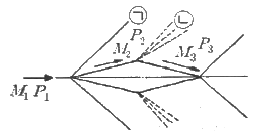
- ㉠은 충격파이며 M1＞ M2, P1＜ P2이다.
- ㉡은 팽창파이며 M2＞ M3, P1＜ P2이다.
- ㉠은 충격파이며 M1＞ M2, P2＞ P3이다.
- ㉡은 팽창파이며 M2＜ M3, P2＞ P3이다.
(정답률: 62%)
14. 헬리콥터의 수평 최대속도를 비행기와 같은 고속으로 비행 할 수 없는 이유가 아닌 것은?
- 전진하는 깃 끝의 충격실속 때문
- 후퇴하는 깃의 날개 끝 실속 때문
- 후퇴하는 깃 뿌리의 역풍범위가 커지기 때문
- 회전날개(Rotor Blades)의 강도상 문제 때문
(정답률: 58%)
15. 받음각이 클 때 기체전체가 실속되고 그 결과 옆놀이와 빗놀이를 수반하여 나선을 그리면서 고도가 감소되는 비행상태는?
- 스핀(Spin) 상태
- 더치 롤(Dutch roll) 상태
- 크랩 방식(Crab method)에 의한 비행 상태
- 윙다운 방식(Wing down method)에 의한 비행 상태
(정답률: 81%)
16. 프로펠러의 동력계수를 옳게 나타낸 식은? (단, P : 동력, n : 초당 회전수, D : 직경, p : 밀도, V : 비행속도이다.)
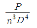
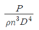
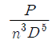
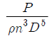
(정답률: 81%)
17. 프로펠러 비행기의 항속거리를 나타내는 식은? (단, B : 연료탑재량, V : 순항속도, P : 순항중의 기관의 출력, t : 항속시간,C : 마력당 1시간에 소비하는 연료량이다.)
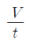
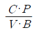
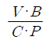
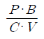
(정답률: 60%)
18. 필요마력에 대한 설명으로 옳은 것은?
- 속도가 작을수록 필요마력은 크다.
- 항력이 작을수록 필요마력은 작다.
- 날개하중이 작을수록 필요마력은 커진다.
- 고도가 높을수록 밀도가 증가하여 필요마력은 커진다.
(정답률: 68%)
19. 비행기의 이륙활주거리가 겨울에 비해 여름철이 더 긴주된 이유는?
- 활주로 온도가 증가함에 따라 밀도 감소
- 활주로 노면의 습도 증가로 인한 항력증가
- 활주로 온도가 증가함에 따라 지면 마찰력 감소
- 온도 증가에 따라 동체가 팽창하여 형상항력 증가
(정답률: 72%)
20. 일반적인 헬리콥터 비행 중 주회전날게에 의한 필요마력의 요인으로 보기 어려운 것은?
- 유도속도에 의한 유도항력
- 공기의 점성에 의한 마찰력
- 공기의 박리에 의한 압력항력
- 경사충격파 발생에 따른 조파저항
(정답률: 83%)
2과목: 항공기관
21. 제트기관 항공기가 정지상태에서 단위면적(m2)당 40kg/s 질량을 속도 500m/s 로 방출할 때 팽창압력은 대기압이며 노즐 단면적은 0.2m2라면 추력은 몇 kN인가?
- 4
- 8
- 10
- 20
(정답률: 32%)
22. 가스터빈기관이 정해진 회전수에서 정격 출력을 낼 수 있도록 연료조절장치와 각종 기구를 조정하는 작업을 무엇이라 하는가?
- 모터링(Motoring)
- 트리밍(Trimming)
- 크랭킹(Cranking)
- 고장탐구(Troubleshooting)
(정답률: 84%)
23. 그림과 같은 단순 가스터빈기관 사이클의 P-V선도에서 압축기가 공기를 압축하기 위하여 소비한 일은 선도의 어떤 면적과 같은가?
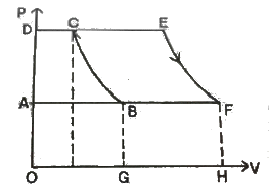
- 도형 ABCDA
- 도형 BCEFB
- 도형 OGBCDO
- 도형 AFEDA
(정답률: 75%)
24. 가스터빈기관의 압축효율이 가장 좋은 압축기 입구에서 공기 속도는?
- 마하 0.1 정도
- 마하 0.2 정도
- 마하 0.4 정도
- 마하 0.5 정도
(정답률: 65%)
25. 다음 중 역추력 장치를 사용하는 가장 큰 목적은?
- 이륙시 추력 증가
- 기관의 실속 방지
- 재흡입 실속 방지
- 착륙후 비행기 제동
(정답률: 90%)
26. 항공기용 왕복기관의 이상적인 사이클은?
- 오토사이클
- 카르노사이클
- 디젤사이클
- 브레이튼사이클
(정답률: 82%)
27. 왕복기관의 압력식 기화기에서 저속혼합조절(Idlemixture control)을 하는 동안 정확한 혼합비를 알 수 있는 계기는?
- 공기압력계기
- 연료유량계기
- 연료압력계기
- RPM 계기와 MAP 계기
(정답률: 77%)
28. 프로펠러(Propeller)의 깃 트랙(Blade track)에 대한 설명으로 옳은 것은?
- 프로펠러의 피치(Pitch)각이다.
- 프로펠러가 1회전하여 전진한 거리이다.
- 프로펠러가 1회전하여 생기는 와류(Vortex)이다.
- 프로펠러 블레이드(Propeller blade) 선단의 대한 궤적이다.
(정답률: 78%)
29. 왕복기관의 마그네토 낙차(Drop)를 점검할 때 좌측 또는 우측의 단일 마그네토 점검을 2~3초 이내에 해야 하는 이유로 가장 옳은 것은?
- 기관이 과열 될 수 있기 때문이다.
- 마그네토에 과부하가 걸리기 때문이다.
- 점화플러그가 오염(Fouling)되기 때문이다.
- 마그네토 과열로 기능을 상실하기 때문이다.
(정답률: 62%)
30. 건식 윤활유 계통내의 배유 펌프의 용량이 압력 펌프의 용량보다 큰 이유로 옳은 것은?
- 기관부품에 윤활이 적절하게 될 수 있도록 윤활유의 최대 압력을 제한하고 조절하기 위해
- 윤활유에 거품이 생기고 열로 인해 팽창되어 배유되는 윤활유의 양이 많아지기 때문
- 기관이 마모되고 갭(Gap)이 발생하면 윤활유 요구량이 커지기 때문
- 윤활유를 기관을 통하여 순환시켜 예열이 신속히 이루어지게 하기 위해서
(정답률: 85%)
31. 실린더 체적이 80in3, 피스톤 행정체적이 70in3이라면 압축비는 얼마인가?
- 7 : 1
- 8 : 1
- 9 : 1
- 10 : 1
(정답률: 76%)
32. 이상기체에 대한 설명으로 틀린 것은?
- 엔탈피는 온도만의 함수이다.
- 내부에너지는 온도만의 함수이다.
- 비열비(Specific heat ratio)값은 항상 1 이다.
- 상태방정식에서 압력은 체적과 반비례 관계이다.
(정답률: 71%)
33. 정속 프로펠러를 장착한 왕복기관을 시동할 때, 프로펠러 제어 레버(Propeller control lever)를 어디에 위치시켜야 하는가?
- LOW RPM
- HIGH RPM
- HIGH PITCH
- VARIABLE
(정답률: 61%)
34. 가스터빈기관의 윤활계통에 대한 설명으로 틀린 것은?
- 가스터빈은 고 회전하므로 윤활유 소모량이 많기 때문에 윤활유 탱크의 용량이 크다.
- 주 윤활 부분은 압축기 축과 터빈축의 베어링부와 액세서리 구동기어의 베어링부이다.
- 건식섬프형은 탱크가 기관 외부에 장착되고 윤활유의 공급과 배유는 펌프로 강압하여 이송한다.
- 가스터빈 윤활계통은 주로 건식섬프형이고 습식섬프형은 저출력 왕복기관에 쓰인다.
(정답률: 60%)
35. 왕복기관에서 마그네토의 작동을 정지시키려면 1차 회로를 어떻게 하여야 하는가?
- 접지에서 분리시킨다.
- 축전지에 연결시킨다.
- 점화스위치를 OFF 위치에 둔다.
- 점화스위치를 BOTH 위치에 둔다.
(정답률: 78%)
36. 케로신 연료를 주로 사용하는 제트기관의 연료와 공기혼합비(공연비)에 대한 설명으로 틀린 것은?
- 연소에 필요한 최적의 이론적인 공연비는 약 15:1이다.
- 연소실로 유입되는 공기 중 1차 공기만이 연소에 사용된다.
- 연소실에서는 연소 효율을 높이기 위해 공연비를 14:1에서 18:1 정도로 제한한다.
- 스웰 가이드 베인(Swirl Guide Vane)은 연소실에서 공기유입량을 조절해 주는 역할을 한다.
(정답률: 59%)
37. 일반적으로 가스터빈기관에서 프리터빈(Free turbine)이 부착된 기관은?
- 터보제트
- 램제트
- 터보프롭
- 터보팬
(정답률: 64%)
38. 왕복기관의 분류 방법으로 옳은 것은?
- 연소실의 위치 및 냉각 방식 의하여
- 냉각 방식 및 실린더 배열에 의하여
- 실린더 배열과 압축기의 위치에 의하여
- 크랭크 축의 위치와 프로펠러 깃의 수량에 의하여
(정답률: 67%)
39. 가스터빈기관의 연료 분사 방법에 대한 설명으로 옳은 것은?
- 1차 연료는 균등한 연소를 얻을 수 있도록 비교적 좁은 각도로 분사된다.
- 1차 연료는 물분사와 함께 이루어지며 비교적 좁은 각도로 분사된다.
- 2차 연료는 연소실 벽면보호와 균등한 연소를 위해 비교적 좁은 각도로 분사된다.
- 2차 연료는 시동을 용이하게 하기 위해 비교적 넓은 각도로 분사된다.
(정답률: 71%)
40. 항공기 왕복기관의 회전수가 일정한 상태에서 고도가 증가할 때 기관출력에 대한 설명으로 옳은 것은? (단, 기온의 변화는 없으며, 과급기는 없다.)
- 밀도가 감소하여 출력이 감소한다.
- 밀도는 증가하나 출력은 일정하다.
- 밀도가 증가하여 출력이 감소한다.
- 밀도가 일정하므로 출력이 일정하다.
(정답률: 71%)
3과목: 항공기체
41. 항공기 호스(Hose)를 장착할 때 주의사항으로 틀린 것은?
- 호스가 꼬이지 않도록 한다.
- 내부유체를 식별할 수 있도록 식별표를 부착한다.
- 호스의 진동을 방지하도록 클램프(Clamp)로 고정한다.
- 호스에 압력이 가해질 때 늘어나지 않도록 정확한 길이로 설치한다.
(정답률: 84%)
42. 재료에 가해지는 힘이 제거되면 원래의 상태로 돌아가려는 성질은?
- 탄성
- 전단
- 항복
- 소성
(정답률: 90%)
43. 항공기 날개에 장착되는 장치의 위치가 다르게 짝지어진 것은?
- 크루거 플랩(Kruger Flap), 슬랫(Slat)
- 크루거 플랩(Kruger Flap), 스플릿 플랩(Split flap)
- 슬롯 플랩(Slotted flap), 스플릿 플랩(Split flap)
- 슬롯 플랩(Slotted flap), 플레인 플랩(Plain flap)
(정답률: 64%)
44. 리벳 머리 부분에 볼록하게 튀어 나온 띠(Dash)가 두개 나란히 표시되어 있다면 이 리벳의 재질 기호는?
- AD
- DD
- D
- A
(정답률: 84%)
45. 인공시효경화 처리로 강도를 높일 수 있는 가장 좋은 알루미늄 합금은?
- 1100
- 2024
- 3003
- 5⑤2
(정답률: 87%)
46. 판재를 굴곡작업하기 위한 그림과 같은 도면에서 굴곡접선의 교차부분에 균열을 방지하기위한 구멍의 명칭은?
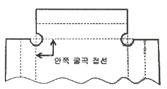
- Pilot hole
- Lighting hole
- Relief hole
- Countsunk hole
(정답률: 83%)
47. 항공기 일부의 부재 파손으로부터 안전성을 보장하기 위한 구조는?
- 경량구조(Light weight structure)
- 샌드위치구조(Sandwich structure)
- 모노코크구조(Monocoque structure)
- 페일세이프구조(Fail-safe structure)
(정답률: 89%)
48. 하중배수선도에 대한 설명으로 옳은 것은?
- 수평비행을 할 때 하중배수는 0이다.
- 하중배수선도에서 속도는 진대기속도를 말한다.
- 구조역학적으로 안전한 조작범위를 제시한 것이다.
- 하수배수는 정하중을 현재 작용하는 하중으로 나눈 값이다.
(정답률: 69%)
49. 다음과 같은 단면에서 X축에 관한 단면의 2차 모멘트
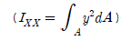
는 몇 cm4인가?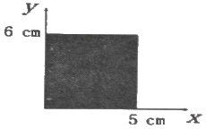
- 240
- 300
- 360
- 420
(정답률: 46%)
50. 트라이사이클 기어(Tricycle gear)에 대한 설명으로 틀린 것은?
- 이·착륙 증에 조종사에게 좋은 시야를 제공한다.
- 기어의 배열은 노스기어와 메인기어로 되어 있다.
- 빠른 착륙속도에서도 강한 브레이크를 사용할 수 있다.
- 항공기 중력중심이 메인기어 후방으로 움직여 그라운드 루핑을 방지한다.
(정답률: 59%)
51. 다음 중 같은 재질을 가진 금속판재의 굽힘 허용값을 결정하는 요소가 아닌 것은?
- 재질의 두께
- 굽힘각도
- 굽힘기의 용량
- 곡률반지름
(정답률: 82%)
52. 항공기의 최대 총무게에서 자기무게를 뺀 것으로 승무원, 승객, 화물 등의 무게를 포함하는 무게는?
- 테어무게(Tare Weight)
- 유효하중(Useful Load)
- 최대허용무게(Max allowble Weight)
- 운항 자기무게(Operating Empty Weight)
(정답률: 73%)
53. 모노코크구조와 비교해서 세미모노코크구조의 차이점에 대한 설명으로 옳은 것은?
- 리브를 추가하였다.
- 벌크헤드를 제거하였다.
- 외피를 금속으로 보강하였다.
- 프레임과 세로대, 스트링어를 보강하였다.
(정답률: 86%)
54. 항공기 조종계통에서 회전운동을 이용하여 직선운동의 방향을 90도 변환시키는 부품은?
- 벨 크랭크(Bell crank)
- 토크 튜브(Torque tube)
- 클레비스 핀(Clevis pin)
- 푸쉬 풀 로드(Push pull rod)
(정답률: 70%)
55. 비소모성 텅스텐 전극과 모재 사이에서 발생하는 아크열을 이용하여 비피복 용접봉을 용해시켜 용접하며 용접부위를 보호하기 위해 불활성가스를 사용하는 용접 방법은?
- TIG 용접
- 가스 용접
- MIG 용접
- 플라즈마 용접
(정답률: 70%)
56. 단층 유니버셜 헤드 리벳(Universal head rivet)작업을 할 때 최소 끝거리 및 리벳의 최소 간격(Pitch)은?
- 최소 끝거리는 리벳 직경의 2배 이상, 최소 간격은 리벳 직경의 3배
- 최소 끝거리는 리벳 직경의 2배 이상, 최소 간격은 리벳 길이의 3배
- 최소 끝거리는 리벳 직경의 3배 이상, 최소 간격은 리벳 길이의 4배
- 최소 끝거리는 리벳 직경의 3배 이상, 최소 간격은 리벳 직경의 4배
(정답률: 69%)
57. 다음 중 앞바퀴형 착륙장치의 장점으로 틀린 것은?
- 조종사의 시야가 좋다.
- 이착륙 저항이 작고 착륙성능이 양호하다.
- 가스터빈기관에서 배기가스 분출이 용이하다.
- 중심이 주바퀴 뒤쪽에 있어 지상전복 위험이 적다.
(정답률: 68%)
58. 부적절한 열처리로 결정립계가 큰 반응성을 갖게 되어 입자의 경계에서 발생하며 항공기에 치명적 손상을 줄 수 있는 부식은?
- 찰과부식
- 응력부식
- 입계부식
- 이질금속간의 부식
(정답률: 78%)
59. 고장력강으로 니켈강에 크롬이 0.8~1.5% 함유된 것으로 강도를 요하는 봉재나 판재, 그리고 기계 동력을 전달하는 축, 기어, 캠, 피스톤 등에 널리 사용되는 것은?
- 니켈강
- 니켈-크롬강
- 크롬강
- 니켈-크롬-몰리브덴강
(정답률: 74%)
60. 항공기 무게 측정 결과가 다음과 같다면 자기무게의 무게중심의 위치는? (단, 8G/L(G/L 당 7.5lbs)의 오일이 –30in 의 거리에 보급되어 있다.)(오류 신고가 접수된 문제입니다. 반드시 정답과 해설을 확인하시기 바랍니다.)
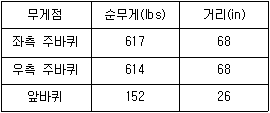
- 61.64
- 51.64
- 57.67
- 66.14
(정답률: 42%)
4과목: 항공장비
61. 다음 중 화학적 방빙(Anti-icing)방법을 주로 사용하는 곳은?
- 프로펠러
- 화장실
- 피토튜브
- 실속경고 탐지기
(정답률: 72%)
62. 계기의 지시속도가 일정할 때, 기압이 낮아지면 진대기 속도의 변화는?
- 감소한다.
- 변화가 없다.
- 증가한다.
- 변화는 일정하지 않다.
(정답률: 58%)
63. 자세계(Attitude Director Indicator:ADI)가 지시하는 4가지 요소는?
- 하강(Flight down)자세, 피치(Pitch)자세, 요(Yaw)변화율, 미끄러짐(Slip)
- 롤(Roll)자세, 선회(Left & Right turn)자세, 요 변화율, 미끄러짐
- 롤 자세, 피치 자세, 기수 방위(Heading) 자세, 미끄러짐
- 롤 자세, 피치 자세, 요 변화율, 미끄러짐
(정답률: 57%)
64. 납산축전지(Lead acid battery)의 양극판과 음극판의 수에 대한 설명으로 옳은 것은?
- 같다.
- 양극판이 한개 더 많다.
- 양극판이 두개 더 많다.
- 음극판이 한개 더 많다
(정답률: 64%)
65. 다음 중 유선통신 방식이 아닌 것은?
- Call System
- Flight Interphone System
- Service Interphone System
- Automatic Direction Finder
(정답률: 57%)
66. 항공계기에 요구되는 조건에 대한 설명으로 옳은 것은?
- 기체의 유효 탑재량을 크게 하기위해 경량이어야 한다.
- 계기의 소형화를 위하여 화면은 작게하고 본체는 장착이 쉽도록 크게 해야 한다.
- 주위의 기압과 연동이 되도록 승강계, 고도계, 속도계의 수감부와 케이스는 노출이 되도록 해야 한다.
- 항공기에서 발생하는 진동을 알 수 있도록 계기판에는 방진장치를 설치해서는 안된다.
(정답률: 66%)
67. 자이로의 섭동 각속도를 옳게 나타낸 것은? (단, M : 외부력에 의한 모멘트,L : 자이로 로터의 관성 모멘트이다.)
- M/L
- L/M
- L-M
- M×L
(정답률: 63%)
68. 저항 루프형 화재 탐지계통을 이루는 장치가 아닌 것은?
- 타임스위치
- 써미스터
- 경고계전기
- 화재경고등
(정답률: 71%)
69. 그림과 같은 회로의 회전계는?
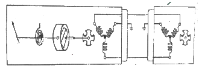
- 기계식 회전계
- 전기식 회전계
- 전자식 회전계
- 맴돌이 전류식 회전계
(정답률: 54%)
70. 주파수가 100Hz 이고 4A 의 전류가 흐르는 교류회로에서 인덕턴스가 0.01H 인 코일의 리액턴스는 몇 Ω 인가?
- 1π
- 2π
- 3π
- 4π
(정답률: 54%)
71. 다음 중 교류 유도 전동기의 가장 큰 장점은?
- 직류 전원도 사용할 수 있다.
- 다른 전동기 보다 아주 작고 가볍다.
- 높은 시동 토크(Torque)를 갖고 있다.
- 브러시(Brush)나 정류자편이 필요없다.
(정답률: 65%)
72. 다음 중 전기자 코어에서 와전류의 순환을 방지하기 위한 방법은?
- 코어를 절연시킨다.
- 전기자 전류를 제한한다.
- 코어는 얇은 철판을 겹쳐서 만든다.
- 코어 재질과 동일한 가루로 된 철을 사용한다.
(정답률: 53%)
73. 객실압력 조절시 객실압력 조절기에 직접적으로 영향을 받는 것은?
- 공압계통의 압력
- 슈퍼차져의 압축비
- 아웃플로밸브의 개폐
- 터보 콤프레셔 속도
(정답률: 83%)
74. 항공기가 하강하다가 위험한 상태에 도달 하였을 때 작동되는 장비는?
- INS
- Weather rader
- GPWS
- Radio Altimeter
(정답률: 73%)
75. 다음 중 화재탐지장치에서 감지센서로 사용되지 않는 것은?
- 바이메탈(Bimetal)
- 열전대(Thermocouple)
- 아네로이드(Aneroid)
- 공용염(Eutectic salt)
(정답률: 65%)
76. 계기착륙장치(Insturment landing system)에 대한 설명으로 틀린 것은?
- 계기착륙장치의 지상 설비는 로컬라이저, 글라이드 슬롭, 마커비콘으로 구성된다.
- 항공기가 글라이드 슬롭 윗쪽에 위치하고 있을 때는 지시기의 지침은 아래로 흔들린다.
- 항공기가 로컬라이저 코스의 좌측에 위치하고 있을 때는 지시기의 지침은 좌로 움직인다.
- 로컬라이저 코스와 글라이드 슬롭은 90Hz 와 150Hz로 변조한 전파로 만들어지고 항공기 수신기로 양쪽의 변조도를 비교하여 코스 중심을 구한다.
(정답률: 56%)
77. 유압장치와 공압장치를 비교할 때 공압장치에서 필요없는 부품은?
- 축압기
- 리듀싱밸브
- 체크밸브
- 릴리프밸브
(정답률: 50%)
78. 유압장치의 작동기가 동작하고 있지 않은 상태에서 계통 작동유의 압력이 고르지 못할 때 압력에 대한 완충작용과 동시에 압력조절기의 작동 빈도를 낮추기 위한 장치는?
- 리저버(Reservoir)
- 축압기(Accumulator)
- 체크밸브(Check valve)
- 선택밸브(Selector valve)
(정답률: 73%)
79. 9A 의 전류가 흐르고 있는 4Ω 저항의 양끝 사이의 전압은 몇 V 인가?
- 12
- 23
- 32
- 36
(정답률: 85%)
80. 항공기 안테나에 대한 설명으로 옳은 것은?
- 첨단 항공기는 안테나가 필요 없다.
- 일반적으로 주파수가 높을수록 작아진다.
- VHF 통신용으로는 주로 루프 안테나가 사용된다.
- HF 통신용은 전리층 반사파를 이용하기 때문에 안테나가 필요 없다.
(정답률: 62%)